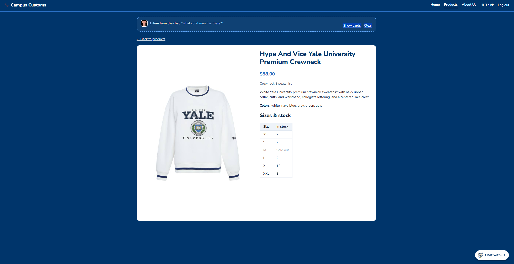
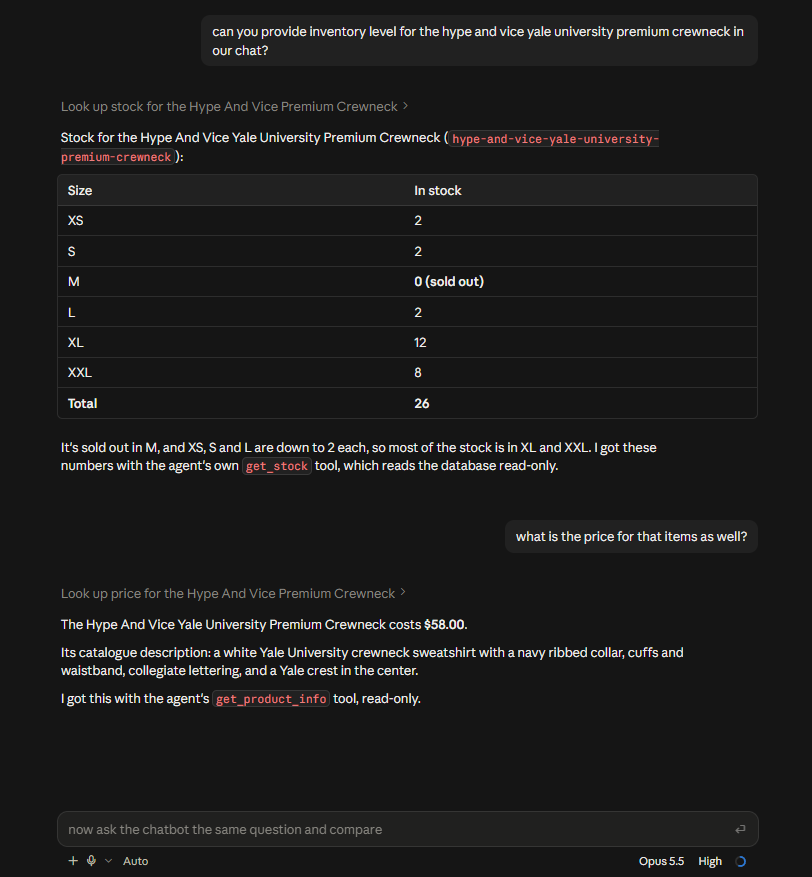
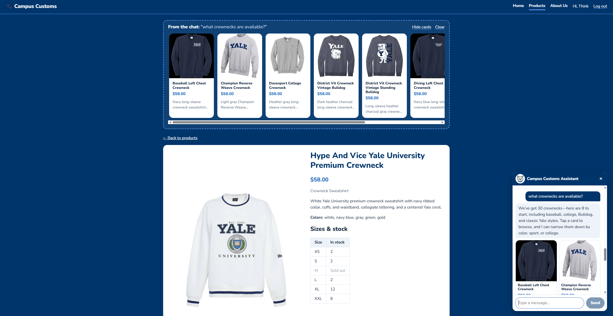
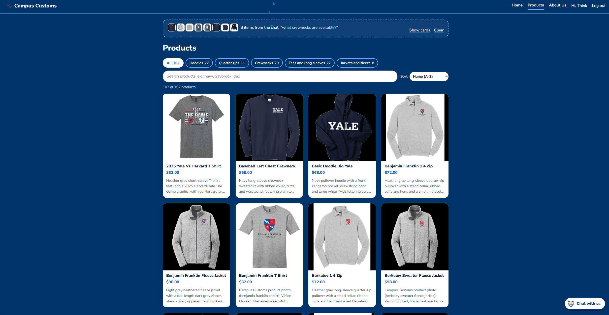

Honest stock and price from the database


The site's price ($58.00) and per-size stock (XS 2, S 2, M sold out, L 2, XL 12, XXL 8) match a direct read of the database exactly, so the numbers shoppers see are real, not invented.
Chat search shows product cards

Asking "what crewnecks are available?" made 8 real crewneck cards appear at the top of the page (and in the chat), pulled straight from the catalogue with their real names, images, and prices.
Usability improvement: Product filters and collapsible chat results

The Products page now has category chips with counts, a search box, and sorting so shoppers can narrow 102 items quickly, and the chat's results collapse to a one-line thumbnail strip ("8 items from the chat") so they don't crowd the page.